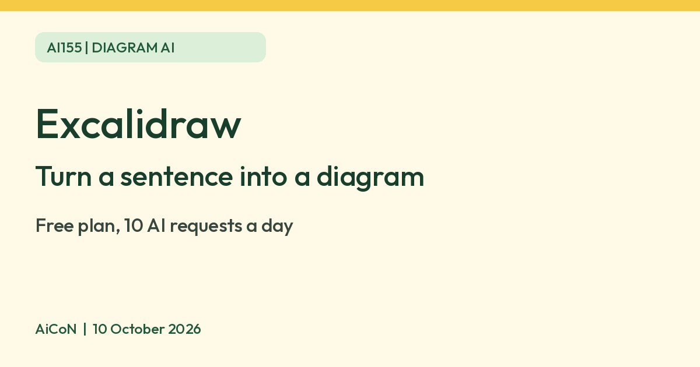

Excalidraw: turn a sentence into a diagram, 10 free AI requests a day
Excalidraw is a free browser whiteboard. Its AI feature turns a sentence into a diagram, and the Free plan gives 10 AI requests a day. Plus lists 100 a day; the displayed US$6 per user/month is approximately ₹580, with billing terms and Indian checkout to be checked.

What it is
Excalidraw is a whiteboard in your browser where you draw boxes, arrows and sketches that look hand-drawn. Its AI feature turns a sentence into a diagram. Excalidraw's AI page gives examples such as an architecture from a repository, an illustration for a slide, or a process map from a policy document. You can then edit the result like any other drawing on the canvas.
Is it free
Yes, with a daily limit. Excalidraw's pricing page lists the Free plan as "Free forever", with 10 AI requests a day. Its AI page says "Generate for free" and that 10 requests a day is "enough to see whether it fits how you work". Plus displays approximately ₹580 per user/month (US$6), with 100 AI requests a day. This conversion uses ₹96.79 per US dollar, not a verified Indian checkout price. Check the chosen billing cycle, total, taxes and card fees before paying.
How to try it
- Open excalidraw.com in your browser.
- Choose the AI text-to-diagram option and type what you want, for example "steps to renew a passport".
- Edit the boxes and arrows by hand, then export or share a link.
Make the prompt useful
Say where the process starts, which steps follow and where it ends. For example: "A library book loan: choose a book, check membership, issue the book, then return or renew it." After generation, check every arrow and decision branch. The diagram is a starting point, not verified policy.
If you already have Mermaid diagram code, Excalidraw says it can convert it into editable shapes without AI or AI request limits.
Limits to know
- The free plan has 10 AI requests a day.
- Free image uploads are compressed. Plus allows up to 4k.
- The AI model is preset and capped on the free plan.
- AI diagrams can have wrong or missing steps. Check them before you share.
- Do not put private or confidential text into the prompt.
- We found no official page on availability in India, and no restriction either.
- We did not test it ourselves.
Frequently asked questions
Do I need to pay to use the AI?
No. The free editor gives 10 AI requests a day. Plus gives more.
Sources: Excalidraw AI, Excalidraw+ pricing, USD to INR reference rate. Checked 10 October 2026.